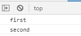
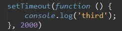
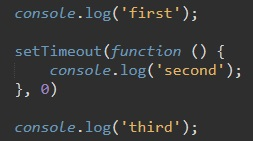
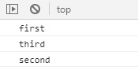

Для начала разберем, что такое синхронность в Java Script. В JavaScript документ читается сверху вниз, и если написать такой код:

то в консоли мы увидим следующее:
Т.е. обе команды выполнились сонхронно с загрузкой документа, по очереди, той, как они указаны в коде.
Но что если нам необходимо, что бы код выполнялся не сразу, а через некоторое время. В этом нам поможет метод setTimeout
Этот метод принимает три параметра:
Пример:
Т.е. функция выполнится чреез две секунды и выведет в консоль - third
Метод setTimeout может принимать и значение - 0. Как это выглядит:
В результате в консоли мы увидим:
Т.е. функция из setTimeout 0 - выполнится только после того как выполнился весь код документа.
Примером асинхронного кода так же может служить модеть событийного цикла Event Loop. К Event Loop относятся такие методы как:
Т.е. функция будет выполнена не сию же секунду, а по какому-то событию, в нашем случае это клик мыши.